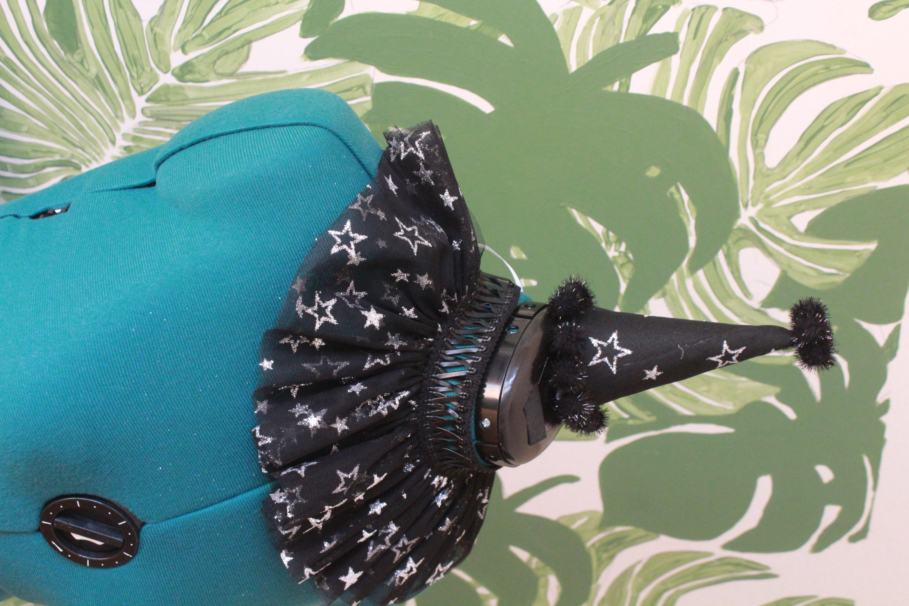

About
In the summer of 2019, my mother and I opened an ice cream shop together in Lincoln, Illinois. The shop, Top Hat Creamery, allowed me to express my creativity in different ways; drawing the logo, painting the signature mural at the back of the shop, and designing the restaurant's interior. Here, I was able to test the waters by organizing events like National Ice Cream for Breakfast Day, vend at several festivals and weddings, and generate press through radio interviews, local news stations, and tourism websites. Although I have moved away, opening and operating Top Hat Creamery is what made me realize that I have a passion for cultivating spaces that provide a sense of community.
Since moving to New Orleans, I have channeled that creativity into photography, costuming, and organizing community-centered events. This started with hosting a series of shows with the former collective Safe and Sound, which aimed to uplift the voices of female and gender-nonconforming musicians. The DIY aspect of Safe and Sound's shows provided a sense of intimacy, for both the performers and audience, allowing for experimentation with artistic expression.
Earlier this year, I became an administrator for f/504, a creative collective that emphasizes the importance of free and accessible networking and collaborative events to help people hone in on their artistic skills. f/504 aims to spread love for photography, music, digital media, modeling, and fashion in a safe environment for creatives of all ages and skillsets, in different venues around New Orleans.
Recent projects of mine include costuming the music video "Water" by Wild Roots Rising, and planning Keep The Greenway Green, a community music festival where the video debuted, and proceeds were donated to the Louisiana Himilaya Association and Pelican Gardens. Regardless of the setting, I strive to create an environment where artists of any kind feel comfortable expressing themselves.
Portfolio
Music Co-Ordinator for Keep The Greenway Green
Keep The Greenway Green is a community first event hosted by Wild Roots Rising with live music, local art, activism information, a clothing swap, and garden fresh food. Hosted at LHA (Louisiana Himalayan Association) in New Orleans Mid-City.
Responsibilities
Administrator for f/504
f/504 is a New Orleans based creative collective that focuses on bringing together artists of all skillsets by hosting events in public spaces for no cost.
Responsibilites
Projects
Recent costuming pieces and shoots
Vintage hat decorated with king cake babies, repurposed lace, and pearls
This hat was taken apart and restructured with new mateirals. The lace, pearls, and charms are all second hand, and were painted and sealed before fixed on the hat
Clowning Around
This hat and collar set were made with second hand mesh and embossed with glitter and stars, finished with second hand leather cording.
Repurposed Bolo
Bolo tie made out of a vintage brooch, finished with epoxy.